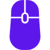

<!DOCTYPE html><html lang="en"><head><meta charset="utf-8"><meta content="width=device-width, initial-scale=1.0" name="viewport"><title> Wireless Mouse Y1 | Precision Peripherals Ltd </title><meta content="Precision Peripherals Ltd Wireless Mouse Y1 product information." name="description"><link href="../../Assets/css/style.css" rel="stylesheet"><link href="../../Assets/image/mouse_logo.png" rel="icon" type="image/x-icon"></head><body class="theme-mouse"><div class="page-layout"><aside class="sidebar"><div class="company-brand"><h2 class="company-name"> Precision Peripherals Ltd </h2></div><nav aria-label="Main navigation" class="vertical-nav"><a class="active" href="index.html"> Home </a><a class="" href="about.html"> About Product </a><a class="" href="spec.html"> Technical Specifications </a><a class="" href="features.html"> Components / Features </a><a class="" href="faq.html"> FAQ </a></nav></aside><main class="image-main"></main></div><footer><div class="footer-inner"><p class="footer-copyright"> &copy; 2026 Precision Peripherals Ltd. All rights reserved. </p><p class="footer-navigation"> Additional product information is available in the Technical Specifications and FAQ sections. </p><p class="footer-links"> Privacy Policy <span aria-hidden="true"> | </span> Terms of Use <span aria-hidden="true"> | </span> Copyright Notice </p><p class="footer-company"> Precision Peripherals Ltd supports digital-skills initiatives, public workshops, and community learning programmes. The organization periodically works with schools, libraries, technology educators, accessibility groups, and nonprofit organisations to encourage responsible technology use, ergonomic awareness, electronics recycling, and access to clear public information. </p></div></footer></body></html>